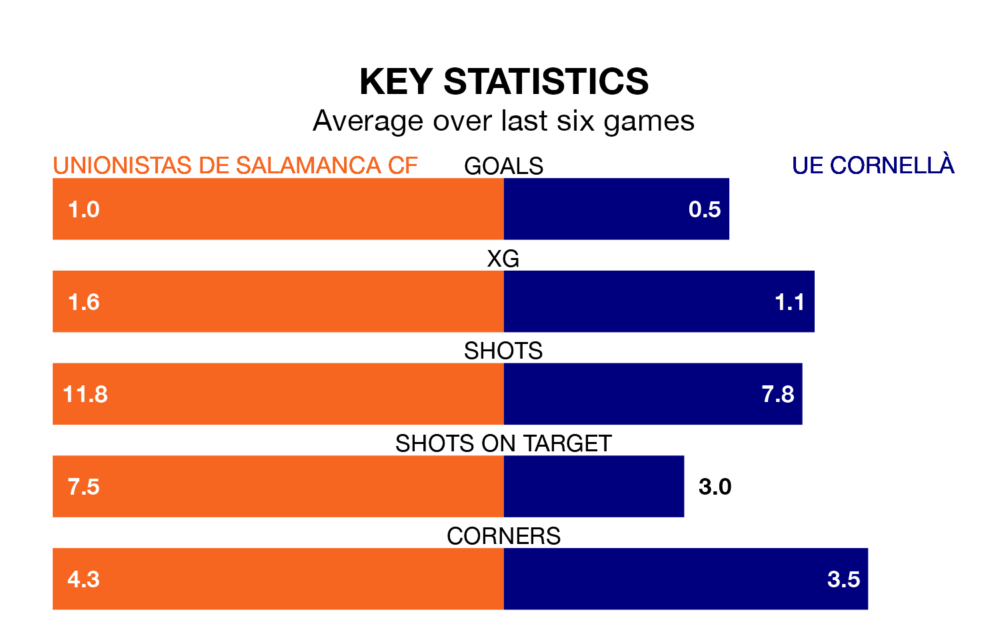

UE Cornellà make the journey to Pistas del Helmántico to play Unionistas de Salamanca CF on early Sunday looking to pick up points to end their three-game losing streak.
UE Cornellà's struggles have left them with just four points from their last six Primera Division RFEF Group 1 matches, while their opponents have earned 11 from a possible 18.
UE Cornellà are 15th in the table after 20 games, of which they have won five and drawn six, earning 21 points.
Unionistas de Salamanca are four places ahead of the visitors in 11th, with six wins and eight draws putting them on 26 points.
With 13 goals in 20 games so far this season, the home side are the league's third-lowest scorers with 0.7 goals per game. But they are conceding fewer than average too, letting in 16 goals at a rate of 0.8 per game.
UE Cornellà are also below average scorers, with 0.9 goals per game, compared to a league average of 1.0. They have conceded 1.1 goals per game.
Unionistas de Salamanca's last match was on Sunday, a 0-0 draw against Sestao River Club.
UE Cornellà lost 1-0 against CD Teruel last time out, on January 20.
Updated: 09:18 (UTC), 23/01/24